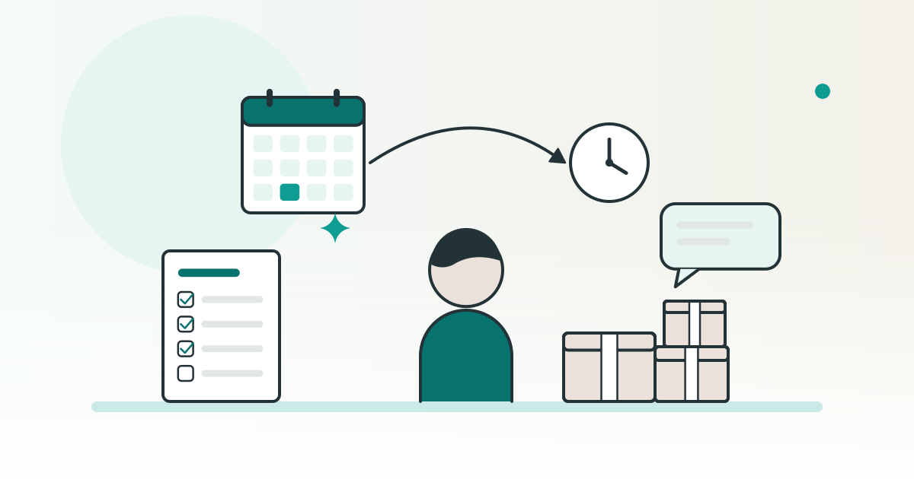

SHOPKIT コラム
ネットショップを一人で運営するには毎日の作業と、続けるための決めごと

ネットショップを一人で運営するには、注文ごとの「今の状態・次にすること・期限」を見える形にして、受注から発送までの流れをそろえます。その上で、商品の更新や集客を進める時間、休む日の案内、外へ頼む範囲を決めましょう。受注の表から、手順書や返信文、休業日の案内までつなげて整理します。
この記事は、完成品のネットショップを販売している SHOPKIT が書いています。
この記事で分かること
- 受注・発送・問い合わせを、次にすることまで並べる方法
- 毎日・毎週・毎月の作業と、手順書・返信文の作り方
- 外部へ頼むときの取り決めと、休業時にお店へ載せる案内
受注から発送までを、注文ごとに見渡す
まずは、注文を受けてからお客様へ案内するまでの作業を並べます。受注、仕入れや在庫の照合、発送、問い合わせ、商品の更新、集客が主な整理の対象です。商品を手元から発送するか、別の場所から発送するかによって、自分で行う作業と相手に連絡する作業を分けてください。
次の表は、作業を書き出すための一般的な例です。自分の販売方法に合わせて、必要な項目を足して使います。
| 作業 | 見ておく内容 | 次にすることの書き方 |
|---|---|---|
| 注文を受ける | 商品・数量・届け先、支払いの状態、店で案内した発送の予定。 | 在庫を照合する、入金を待つ、発送の準備へ進むなど、注文ごとの次の作業を残す。 |
| 仕入れ・発送 | 商品の手配の状態、梱包、宛先、発送後に案内する内容。 | 手配先からの回答待ちと、自分が進められる作業を分ける。 |
| 問い合わせ | 質問の内容、答えの根拠、まだ調べること、返信の予定。 | 回答済みか、追加の情報を待っているかを記録する。 |
| 商品の更新 | 仕入れ先の情報、店の商品説明、在庫や販売条件の変更。 | 変更するページと、その変更を案内する相手を残す。 |
| 集客 | 紹介したい商品、用意する写真・説明、案内するページ。 | 撮影待ち、文章の準備、案内先の点検などに分ける。 |
メモには注文を区別する番号や記号を使い、同じ情報を何か所にも書き直す作り方は減らすのがおすすめです。注文者の氏名や住所を含む画面・書類は、誰が見られる場所へ置くかも決めておきましょう。
毎日・毎週・毎月の区切りは、期限を見た上で決める
期限のある注文や問い合わせを先に見て、それ以外の作業を予定へ入れます。毎日・毎週・毎月という分け方は、作業を見渡すための例です。発送の約束や、商品情報に変更が生じたときの対応は、その区切りを待たずに扱います。
- 毎日見るもの：新しい注文、支払いと手配の状態、発送や返信の期限、止まっている作業。
- 週ごとにまとめて見るもの：商品説明や写真の不足、集客で伝えるテーマ、繰り返し届いた質問。
- 月ごとに振り返るもの：支払い・入金の記録、仕入れ先との連絡、作業が滞った理由、手順書に足す内容。
会社員が副業として始める場合は、勤務先の定めや必要な手続きを先に読み、自分が使える時間と休む時間を書き出してください。制度の資料を読む入口として、厚生労働省の「副業・兼業」の案内があります。個別の勤務条件や労働時間の扱いは、勤務先や相談窓口で確かめてください。
関連：スキマ時間でできる在宅の副業の選び方｜1日の空き時間から考える
手順書と返信文に、迷ったときの戻り先を残す
繰り返す作業は、始める条件・作業の順番・終わった印を手順書にします。「発送する」だけで終わらせず、商品の照合、梱包、宛先の照合、発送の記録、案内まで、自分の作業に沿って書きます。
手配先から回答が来ない、商品情報が食い違う、といったときに止める場所も残してください。判断に迷う箇所を飛ばして進めず、誰に何を聞くかを書いておく形です。画面の配置が変わったら、手順書も実際の画面に合わせて直します。
返信文のひな形には、問い合わせを受け取ったこと、調べる内容、次に案内する予定を書きます。送る前に、その注文で分かっている事実と合っているかを読み直しましょう。確定していない発送予定を、そのまま約束する文にしないことも点検項目です。
パソコンの操作で迷う場合は、受注から案内までを自分の端末でたどり、止まった画面を手順書の追記候補にする進め方があります。
外へ頼む作業は、範囲・終わり方・情報の扱いを決める
外部へ頼むときは、何を渡し、何を受け取り、どこで自分が内容を確かめるかを決めます。写真や説明文の作成、発送に関係する作業など、頼みたい部分を書き出してください。依頼先の名前や料金を比べる前に、作業の範囲とお店側に残す判断を整理します。
- 作業の範囲、渡す資料、受け取る物、完了とする条件。
- 費用に含まれる範囲、変更ややり直し、依頼を終えるときの取り決め。
- お客様への回答や、お店に載せる内容を誰が決め、誰が点検するか。
- 注文者の情報を見られる人、別の相手へ作業を頼む場合の連絡、終了後の情報の扱い。
個人情報保護委員会のガイドラインは、個人データの扱いを委託する事業者に対し、委託先での安全な管理のため、必要かつ適切な監督を求めています。ここでいう個人データは、個人情報データベース等（個人情報を検索できるように整理した情報の集まりなど）に含まれる個人情報を指します。
委託先を選ぶ際には、依頼する業務に応じた安全管理の措置が実施されるかを、事前に確かめることも求めています。委託契約では、双方で決めた安全管理の内容に加え、委託元が情報の取扱状況を把握することを定めるのが望ましいと説明しています。
出典：個人情報保護委員会「個人情報保護法ガイドライン（通則編）」（2-6 個人データ、3-4-4 委託先の監督）。
依頼する作業に注文者の情報が要るかを先に整理し、渡す資料を選びます。契約を交わした後も、決めた扱いで進んでいるかを点検の予定に入れてください。契約や個人情報の扱いについて個別の判断が要る点は、公的窓口や専門家へ相談しましょう。
休む日は、発送と返信の予定を分けて案内する
休業を案内するときは、注文の受付、発送の作業、問い合わせへの返信を分けて書きます。どの作業を休むのかと、再開後にいつ案内するかを、自分が対応できる予定に合わせて整理しましょう。
消費者庁の通信販売の案内では、商品の引渡時期や支払いの時期・方法などが、広告に載せる事項として示されています。休業のお知らせを用意するときは、商品ページや販売条件に載せている時期と合わせて点検してください。
出典：消費者庁 特定商取引法ガイド「通信販売」（広告の表示）。
すでに受けた注文は、これから受ける注文と分けて、案内済みの予定を見ます。予定に変更が生じるときは、その注文について伝える内容と次の案内時期を整理してください。返信が遅れる日も、いつ案内する予定かを用意し、確定していない内容を言い切らない形にします。
発送方法や梱包、送料の案内を見直す場合は、送料の記事で扱う点検箇所も参考にしてください。
関連：ネットショップの送料の決め方｜発送方法・梱包と先に伝えること
手順書が付くお店なら、受け取る範囲を先に読む
お店を選ぶ段階で、受注から発送までの手順や、集客について受け取れる資料を質問にします。SHOPKITでお届けするものには、管理画面の使い方や注文から発送までの手順、仕入れ先と商品の選び方をまとめた運営マニュアルが含まれます。SNSや検索からお店へ人を呼ぶ手順をまとめた集客マニュアルも含まれます。
SHOPKITのFAQでは、副業での利用も案内しています。
出典：SHOPKITのお渡しするもの・よくある質問（2026年10月15日時点の記載）。
自分の販売方法で行う作業を先に並べ、資料のどこを読めば進められるか、購入前に聞きたいことをまとめてください。お店を見るときは、販売中のお店の一覧へ進んでください。
関連：一人でできる事業の選び方｜家で続けられる小さな商いの条件
よくある質問
一人で運営するネットショップでは、毎日何を見ればよいですか？
新しい注文、支払いと手配の状態、発送や返信の期限、止まっている作業を見ます。注文ごとに今の状態と次にすることを残し、期限のある対応から予定に入れましょう。
商品更新や集客は、毎週まとめて行ってもよいですか？
写真の準備や紹介するテーマは、まとめて予定を組む方法があります。ただし、商品情報に変更が生じたときの対応や、注文の期限は別に扱います。毎週という区切りは整理の例です。
発送などを外部へ頼むときは、何を決めておきますか？
作業の範囲、渡す資料、完了の条件、費用に含む範囲、変更や終了の取り決めを整理します。注文者の情報を渡す場合は、見られる人や終了後の扱いも含めて、本文で紹介した個人情報保護委員会の案内を読み、依頼内容を点検してください。
休業や返信が遅れる日は、どう案内すればよいですか？
注文の受付、発送、問い合わせへの返信の予定を分けて案内します。販売条件に載せた時期と、受け付け済みの注文の予定も点検し、変更が生じる場合に伝える内容と次の案内時期を用意しておきましょう。
※ SHOPKITのお渡しするものとFAQは、2026年10月15日時点のサービスページの記載です。公的資料は2026年10月21日に確認しました。作業の分け方は一般的な工夫であり、個別の契約・個人情報・勤務条件の判断は、公的窓口や専門家へ相談してください。